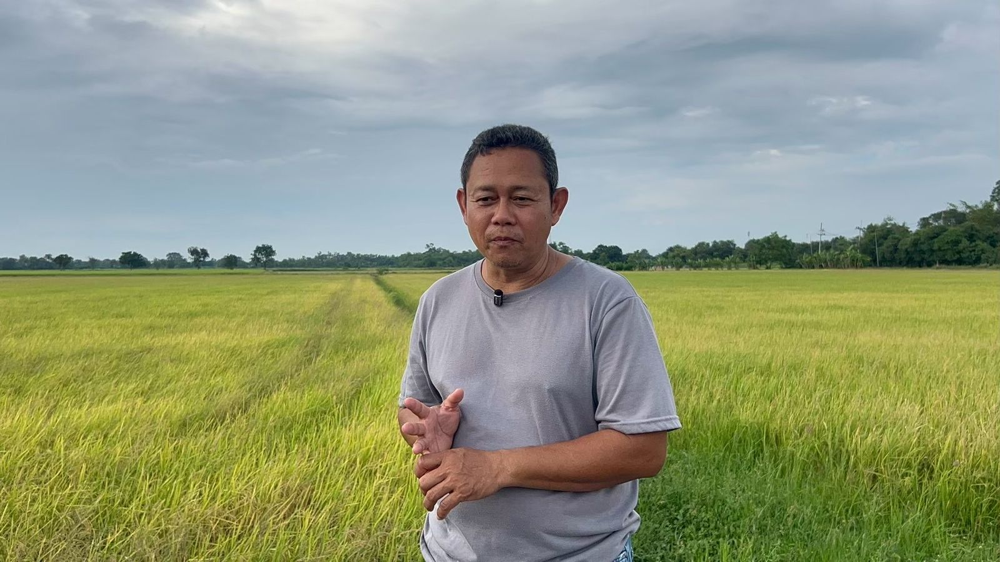
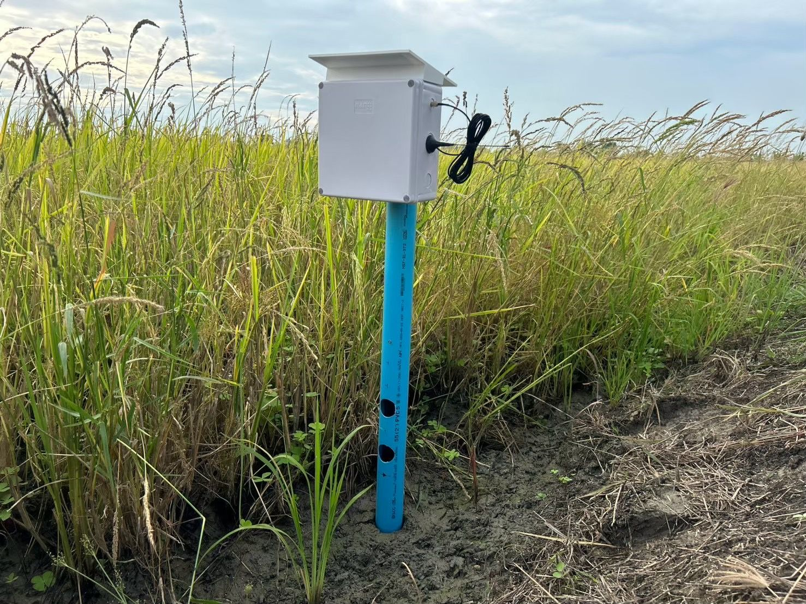

SolarAqua V.3 · เวอร์ชันใช้งานจริง
ตู้วัดระดับน้ำและคุณภาพน้ำพลังงานแสงอาทิตย์ ส่งค่าขึ้นเว็บแบบเรียลไทม์ — ทดลองใช้จริงในแปลงนาที่สระบุรี
1 · ปัญหาจากหน้างาน
หลังจากแข่งขันรายการ Junior Water Prize ทีม 5 คนนำโครงงานไปติดตั้งใช้งานจริงที่ สระบุรี ติดตั้งตู้วัดคุณภาพน้ำ และได้คุยกับ พี่หน่อง เจ้าของแปลงนา
จากบทสนทนานั้น เราได้รู้ว่าปัญหาที่เกษตรกรเจอจริง ๆ คือ เรื่องการวัดระดับน้ำ — ต้องเดินไปดูถึงแปลงด้วยตัวเอง

ก่อน
🚶 เดินไปดูระดับน้ำที่แปลง
ต้องออกไปดูด้วยตา ทุกครั้งที่อยากรู้ว่าน้ำพอไหม
หลังใช้ SolarAqua v3
📱 ดูผ่านตู้ควบคุมและเว็บ
ระดับน้ำในแปลงอัปเดตแบบเรียลไทม์ พี่หน่องไม่ต้องเดินไปดูที่แปลงนา
2 · ตัวผลงาน
หลังรู้ปัญหา เราพัฒนา v3 ขึ้นมาวัดระดับน้ำในแปลงนาแบบเรียลไทม์ ใช้ร่วมกับเว็บไซต์เดิมของโครงงานได้ทันที ดูค่าได้ผ่านตู้ควบคุม

3 · ลงพื้นที่จริง 3 วัน
4 · ผลการทดลอง
ตรวจผลวันที่ 3 พบว่าอุปกรณ์ทำงานได้ตามปกติ ยกเว้นปัญหาเรื่องแมลง
แมลงเข้าไปในตัวอุปกรณ์ เป็นปัญหาหลักที่พบจากการใช้งานจริง
แก้ด้วยการกระตุ้นแบตเตอรี่ แล้วต่อสายเข้าใหม่
อุปกรณ์บางชิ้นเริ่มเป็นสนิมจากการอยู่กลางแจ้ง เป็นข้อมูลสำหรับปรับปรุงรุ่นถัดไป
มีคำบรรยายภาษาอังกฤษ